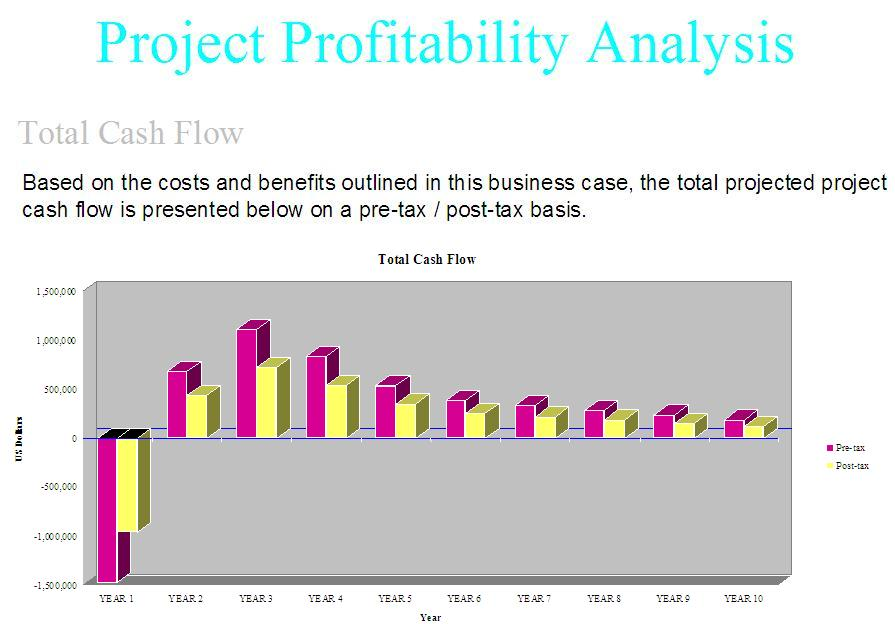
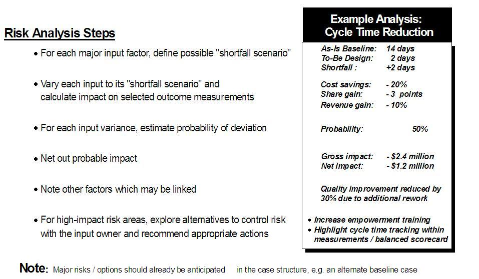

Often ABC analysis of the recommendations by product, customer segment, or channel of distribution is required in order
to develop meaningful cash flow projections for valuation purposes. This analysis is often included in the Business
Case to lend quantitative support for the projections. These specifics are explained in the Activity-Based Cost
Management technique paper.
In addition to quantifying the benefits and cost of each recommendation, the team will be responsible giving as
realistic and objective assessment as possible of the risk involved. The following example shows one way of depicting
the risk assessment for a cycle-time reduction recommendation.

|